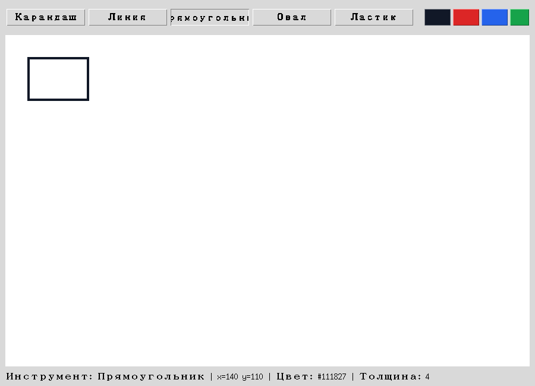

Debug Labs — типичные ошибки рисовалки
Каждая ошибка здесь встречается в реальных студенческих проектах — научитесь узнавать симптом раньше, чем откроете отладчик.
Небольшая коллекция типичных ошибок рисовалок на Canvas — каждая с симптомом и исправлением. Часть из них вы уже видели раньше в главе; здесь они собраны как справочник.
def on_drag(event):
# 'привычная' логика: чем выше на экране, тем БОЛЬШЕ Y
if event.y > start_y:
status.config(text="Двигаемся ВВЕРХ") # неверно для Canvas!# Курсор двигается вниз по экрану, а статус говорит 'ВВЕРХ' —
# логика была написана в терминах Turtle, а не Canvas.У Canvas Y растёт ВНИЗ (раздел 18.9) — event.y > start_y означает «курсор ниже, чем был», а не выше. Перенос интуиции с Turtle без пересчёта знака — частая ошибка именно у тех, кто уже уверенно рисовал Turtle в главах 6–7.
def on_drag(event):
if event.y > start_y:
status.config(text="Двигаемся ВНИЗ") # верно: Y растёт внизdef on_press(event):
pass # забыли сохранить event.x, event.y
def on_drag(event):
canvas.create_line(start_x, start_y, event.x, event.y) # start_x не определена# NameError: name 'start_x' is not defined —
# программа падает на первом же движении мыши после нажатия.on_press() обязан сохранить точку начала (раздел 18.12) — без неё on_drag() просто не может знать, откуда рисовать линию или превью фигуры.
def on_press(event):
global start_x, start_y
start_x, start_y = event.x, event.ycanvas.bind("<Motion>", on_drag) # сработает при ЛЮБОМ движении мыши# Линия рисуется, даже если кнопка мыши вообще не нажата —
# достаточно просто провести курсором над холстом.<Motion> реагирует на любое движение мыши над виджетом. Для рисования только во время перетаскивания нужен именно <B1-Motion> — раздел 18.12 объясняет разницу.
canvas.bind("<B1-Motion>", on_drag) # только при зажатой левой кнопкеdef on_drag(event):
canvas.create_oval(
event.x - 2, event.y - 2, event.x + 2, event.y + 2,
fill="black",
)# Быстрое движение мыши оставляет заметные разрывы между кружками —
# штрих выглядит рваным, а не гладким.Кружок на каждое отдельное событие не учитывает путь МЕЖДУ двумя последовательными точками. Раздел 18.14 показывает решение — соединять новую точку с предыдущей через create_line().
def on_drag(event):
canvas.create_line(last_x, last_y, event.x, event.y, width=3, capstyle=tk.ROUND)
# last_x, last_y обновляются после каждого отрезкаdef on_drag(event):
canvas.delete(preview_id)
preview_id = canvas.create_rectangle(start_x, start_y, event.x, event.y)# Работает, но на каждое из десятков событий Motion в секунду
# Canvas выбрасывает и заново строит один и тот же элемент.Удалить и создать заново — не ошибка в смысле «сломано», но лишняя работа: у Canvas уже есть coords() именно для обновления существующего элемента (раздел 18.18) — без пересоздания.
def on_drag(event):
canvas.coords(preview_id, start_x, start_y, event.x, event.y)def on_press(event):
canvas.create_rectangle(event.x, event.y, event.x, event.y, dash=(4, 2))
# id не сохранён — preview_id нигде не появился
def on_drag(event):
canvas.coords(preview_id, ...) # NameError: preview_id не определена# NameError на первом же движении мыши —
# ссылаться не на что, id черновой фигуры потерян.create_*() возвращает item_id (раздел 18.10), но только если его СОХРАНИТЬ — иначе фигура нарисуется, но обратиться к ней позже будет нечем.
def on_press(event):
global preview_id
preview_id = canvas.create_rectangle(event.x, event.y, event.x, event.y, dash=(4, 2))def get_bounds():
return start_x, start_y, current_x, current_y # без учёта направления
left, top, right, bottom = get_bounds()
if left > right:
raise ValueError("это невозможно") # но перетаскивание вверх-влево именно это и даёт!# Приложение падает с ValueError, если пользователь начал
# перетаскивание из правого нижнего угла будущей фигуры.Мышь можно тянуть в любую из четырёх сторон (раздел 18.16) — код, ожидающий left <= right без предварительной нормализации, работает только для одного из четырёх направлений.
left, top, right, bottom = normalize_bounds(start_x, start_y, current_x, current_y)
# теперь left <= right и top <= bottom гарантированно, независимо от направленияshapes = []
item_id = canvas.create_rectangle(10, 10, 50, 50)
shapes.append("rectangle")
print(shapes[item_id]) # IndexError, если item_id больше len(shapes) - 1# IndexError: list index out of range —
# item_id не совпадает с порядковым номером в собственном списке кода.item_id — внутренний номер Canvas (раздел 18.10), а не позиция в вашем собственном списке фигур. Использовать его как индекс shapes[item_id] совпадёт только случайно.
shapes_by_id = {}
item_id = canvas.create_rectangle(10, 10, 50, 50)
shapes_by_id[item_id] = "rectangle" # словарь — id как КЛЮЧ, а не индексdef undo(self):
item_id = self.undo_stack.pop() # предполагает ОДИН id на действие
self.canvas.delete(item_id)# После Ctrl+Z длинный карандашный штрих теряет только
# последний маленький отрезок, а не исчезает целиком.Один карандашный штрих — это МНОГО отрезков create_line() (раздел 18.14), а не один элемент. Undo обязан хранить список id (или фигур) на КАЖДОЕ действие целиком, а не один id (раздел 18.24).
def undo(self):
shapes = self.undo_stack.pop() # список фигур ОДНОГО действия
del self.document[len(self.document) - len(shapes):]
self.render_document()def _commit_action(self, shapes):
self.document.extend(shapes)
self.undo_stack.append(shapes)
# забыли self.redo_stack.clear()# Undo, затем новый рисунок, затем Redo —
# и на холсте внезапно появляется фигура, никак не связанная с текущим рисунком.Если после Undo нарисовать что-то новое, старая ветка redo больше не соответствует текущему документу. Раздел 18.25 требует явно очищать redo_stack при любом новом действии.
def _commit_action(self, shapes):
self.document.extend(shapes)
self.undo_stack.append(shapes)
self.redo_stack.clear()def clear_canvas(self):
self.canvas.delete("all")
self.document.clear()
# undo_stack и redo_stack не тронуты!# После 'Очистить' нажатие Ctrl+Z пытается убрать фигуры
# из уже пустого документа — список становится отрицательной длины.История описывает документ, которого больше нет — как только document очищается, undo_stack и redo_stack обязаны очиститься вместе с ним (раздел 18.26).
def clear_canvas(self):
self.document.clear()
self.undo_stack.clear()
self.redo_stack.clear()
self.render_document()def choose_custom_color(self):
_rgb, hex_color = colorchooser.askcolor()
self.set_color(hex_color) # не проверили hex_color на None!# Пользователь нажал 'Отмена' в диалоге —
# следующая же попытка нарисовать линию падает: fill=None недопустим.askcolor() возвращает (None, None) при отмене (раздел 18.21) — присвоить это как текущий цвет без проверки значит сломать рисование при следующей же попытке.
def choose_custom_color(self):
_rgb, hex_color = colorchooser.askcolor()
if hex_color is not None:
self.set_color(hex_color)def save_document(self):
path_str = filedialog.asksaveasfilename()
Path(path_str).write_text(...) # не проверили пустую строку!# Пользователь нажал 'Отмена' в диалоге сохранения —
# программа пытается записать файл по пути текущей директории.asksaveasfilename()/askopenfilename() возвращают пустую строку при отмене, а не None и не исключение (раздел 18.30) — код обязан проверить это перед использованием пути.
def save_document(self):
path_str = filedialog.asksaveasfilename()
if not path_str:
return
Path(path_str).write_text(...)def load_from_path(self, path):
data = json.loads(path.read_text(encoding="utf-8"))
self.document = [Shape.from_dict(item) for item in data["items"]]
# забыли self.render_document()!# self.document правильно заполнен новыми фигурами,
# но на экране всё ещё виден старый рисунок — или пустой холст.Как и в главе 17: изменение модели без вызова отрисовки не долетает до экрана. load_from_path() обязан заканчиваться render_document() (раздел 18.30).
def load_from_path(self, path):
data = json.loads(path.read_text(encoding="utf-8"))
self.document = [Shape.from_dict(item) for item in data["items"]]
self.undo_stack.clear()
self.redo_stack.clear()
self.render_document()
# ожидание: если растянуть окно, старые фигуры увеличатся вместе с ним
canvas.grid(row=1, column=0, sticky="nsew")
# ...но существующие create_line/rectangle/oval координаты никто не пересчитывает# Сам виджет Canvas становится больше вместе с окном —
# но уже нарисованные фигуры остаются в прежних абсолютных координатах, не растут.sticky="nsew" и веса строк/столбцов (глава 17) заставляют РАСТИ сам виджет Canvas — это не то же самое, что автоматическое масштабирование координат уже нарисованных фигур. Раздел 18.29 явно разбирает это различие: увеличенный холст не означает автоматически увеличенный рисунок.
# Честная модель: увеличенное окно даёт БОЛЬШЕ МЕСТА для новых фигур,
# а не растягивает уже существующие — если нужно последнее, координаты
# пришлось бы пересчитывать вручную при изменении размера.